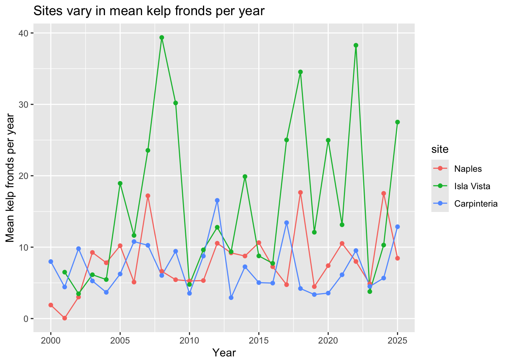
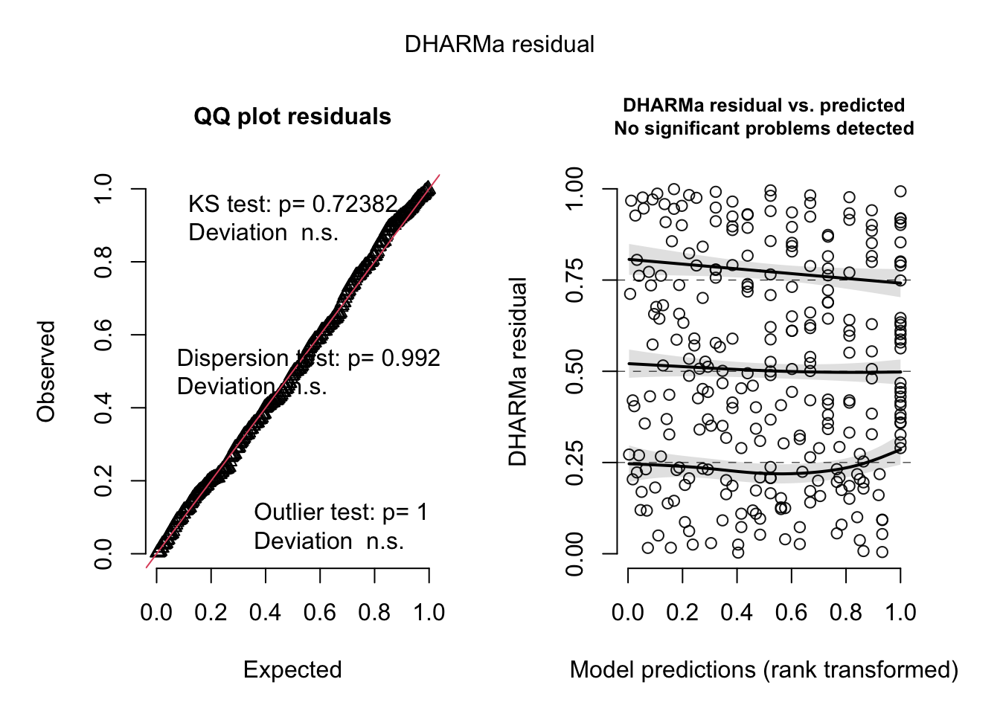
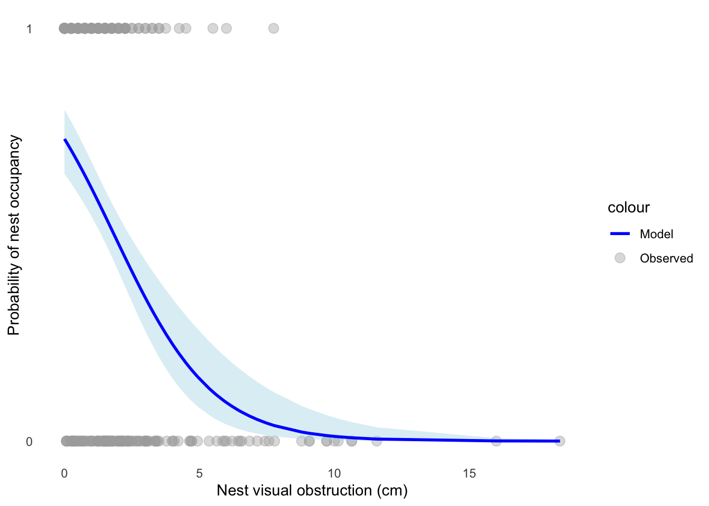

# reading in packages
library(tidyverse)
library(RColorBrewer)
library(ggeffects)
library(here)
library(janitor)
library(readxl)
library(DHARMa)
# reading in data
kelp <- read.csv(here("data", "kelp_data.csv"))
nest <- read.csv(here("data", "nest_data.csv"))ENVS 193DS Final
https://github.com/MarkVelthoen/ENVS-193DS_winter-2026_final
Set Up
Problem 1. Research Writing
a) In part 1, they used a simple linear regression. In part 2 they used a Kruskal-Wallis test.
b) One figure that could be used to accompany the statement is part 2 could be a jitter plot with the interquartile range and median point highlighted for each classification. The x-axis would be split into each water year classification and the y-axis would be the median flooded wetland area in m² for each year. Furthermore, the use of different colors for each classification could help differentiate the data.
c) Flooded wetland area did not show a significant relationship with precipitation. (simple linear regression: F(df model, df residual) = test statistic, p = 0.11, α = significance level, adjusted R² = effect size).)
Flooded wetland area did not differ significantly across water year classifications (wet, above normal, below normal, dry, and critical drought). (Kruskal–Wallis test: H(df) = test statistic, p = 0.12, α = significance level).
d) I am taking a groundwater hydrology class, and groundwater is one of, if not the major source of water for many wetlands. Therefore, it is reasonable to assume that nearby groundwater pumping could influence the flooded area of a wetland, as the water table could be lowered. This variable is continuous, and could be labeled as; Total groundwater extraction (acre-feet per year) within a 1,000 ft radius
Problem 2. Data Visualization
a)
kelp_clean <- kelp |> # creating a new object kelp_clean
clean_names() |> # cleaning names
group_by(site, year) |> #grouping by site and year
filter(!(date == "2000-09-22" & transect == "6" & quad == "40")) |> # filtering out N/A result
filter(site %in% c("IVEE", "NAPL", "CARP")) |> # selecting specific sites
mutate(site = case_when(
site == "NAPL" ~ "Naples",
site == "IVEE" ~ "Isla Vista",
site == "CARP" ~ "Carpinteria"
)) |> # changing the names of the sites to proper form
mutate(site = as_factor(site),
site = fct_relevel(site,
"Naples", "Isla Vista", "Carpinteria")) |> # converts site name to a factor and creates a site order for plotting
summarize(mean_fronds = mean(fronds)) |> # creates mean fronds column
ungroup() # ungroups
slice_sample(kelp_clean, n = 5) #displays 5 samples# A tibble: 5 × 3
site year mean_fronds
<fct> <int> <dbl>
1 Naples 2011 5.32
2 Carpinteria 2020 3.56
3 Isla Vista 2019 12.1
4 Isla Vista 2023 3.78
5 Isla Vista 2011 9.63str(kelp_clean) #displaying structuretibble [77 × 3] (S3: tbl_df/tbl/data.frame)
$ site : Factor w/ 3 levels "Naples","Isla Vista",..: 1 1 1 1 1 1 1 1 1 1 ...
$ year : int [1:77] 2000 2001 2002 2003 2004 2005 2006 2007 2008 2009 ...
$ mean_fronds: num [1:77] 1.8947 0.0606 3.0111 9.2596 7.8141 ...b) The value for fronds in this quad and transect is -99999. This value represents an NA, which occurred if (1) data were not collected for a particular species or (2) a datasheet was lost.
c)
ggplot(data = kelp_clean, # using kelp_clean data
aes(x = year, # year as the x-axis
y = mean_fronds, # mean kelp fronds as the y-axis
color = site)) + # coloring by site
geom_line() + # plotting trendline
geom_point() + # # plotting data points
scale_color_manual(values = c(
"Naples" = "lightpink2",
"Isla Vista" = "darkgreen",
"Carpinteria" = "lightblue")) + # manually coloring each site
labs(x = "Year",
y = "Mean kelp fronds per year",
title = "Sites vary in mean kelp fronds per year") + # labeling x and y axis and title
theme(plot.title = element_text(hjust = 0.5), # center title
panel.border = element_blank()) + # no border
theme_classic() # making the theme classic
d) The site with the most variable mean kelp fronds per year is Isla Vista. We can tell that this is the case because the green line has the largest y-axis range (5 - 40 fronds). Furthermore, the Isla Vista site has very pronounced peaks and troughs, reinforcing the variability of this site. The site with the least variable mean kelp fronds per year is Carpinteria. We can tell that this is the case because the blue line has the smallest range on the y-axis, as well as a smaller number of peaks and troughs.
Problem 3. Data Analysis
a) The 1s and 0s in this data set correspond to whether or not a nest site is being used by a Mountain Plover. 1 corresponds to in use and 0 corresponds to out of use.
b) Visual obstruction: This is a continuous variable, however, it is separated into three sub-categories, visual obstruction directly at nest, visual obstruction 5 meters from the nest and visual obstruction 10 meters from the nest. Visual obstruction measures the height at which vegetation is sufficiently dense to obscure a 2.5-cm wide pole when viewed from a 1-m height. As visual obstruction increases, the probability of Mountain Plover nest site use would decrease because the species prefers open habitats with direct lines of sight to predators. I found this in the discussion section, page 10 “reduced vegetation height and increased exposure of bare ground have been linked to enhanced Mountain Plover habitat quality.”
Distance to prairie dog colony edge: This is a continuous variable quantifies how far each measured nest is from the nearest edge of a prairie dog colony. As distance to colony edge increases, the probability of Mountain Plover nest site use would decrease. This is due to the fact that complementary resources, such as taller vegetation for thermoregulation and predator cover are more accessible. I found this within the discussion section, page 10 “probability of site use declined near cores of large colonies.”
c.
d.
mopl_clean <- nest |> # creating a new object called mopl_clean
clean_names() |> # cleaning the names
mutate(used_bin = ifelse(id == "used",1, 0)) |> # making a new column that displays 1 if nest is in use and 0 if nest is not in use
select(used_bin, edgedist, vo_nest) # selceting only used_bin, edgedist and vo_nest columnsmod_null <- glm(used_bin ~ 1, # making new object mod_null, no predictors
data = mopl_clean, # data
family = binomial) # error distributionmod_sat <- glm(used_bin ~ edgedist + vo_nest, # making new object mod_sat, both edgedist and vo as predictors
data = mopl_clean, # data
family = binomial) # error distributionmod_edge <- glm(used_bin ~ edgedist, # making new object mod_edge, edgedist as predictor
data = mopl_clean, # data
family = binomial) # error distributionmod_vo <- glm(used_bin ~ vo_nest, # making new object mod_vo, vo as predictor
data = mopl_clean, # data
family = binomial) # error distributione)
AIC(mod_sat,
mod_null,
mod_vo,
mod_edge) # calculate the AIC for each model df AIC
mod_sat 3 333.7410
mod_null 1 384.6172
mod_vo 2 331.7690
mod_edge 2 386.0911The best model as determined by Akaike’s Information Criterion (AIC) was nest visual obstruction as a predictor of nest use. AIC = 331.77
f)
plot(simulateResiduals(mod_vo)) #check diagnostic plot
g)
mod_preds <- ggpredict(mod_vo,
terms = "vo_nest [all]") # predicted probabilites
ggplot(mopl_clean, # using mopl_clean data frame
aes(x = vo_nest, # visual obstruction (cm) as the x-axis
y = used_bin)) + # nest usage as y-axis
geom_point(aes(color = "Observed"), # coloring data points
size = 3, # setting the size and transparency
alpha = 0.4) +
geom_ribbon(data = mod_preds, # using mod_preds for ribbon data
aes(x = x, # keeping the same x-axis
y = predicted,
ymin = conf.low,
ymax = conf.high),
fill = "lightblue", # coloring it light blue and setting transparaency
alpha = 0.4) +
geom_line(data = mod_preds, # using mod_preds data for line
aes(x = x, # keeping the same x-axis
y = predicted,
color = "Model"), # coloring the line and setting width
linewidth = 1) +
labs(x = "Nest visual obstruction (cm)", # labeling the x and y axis
y = "Probability of nest occupancy") +
scale_y_continuous(limits = c(0, 1), # setting y-axis scale
breaks = c(0, 1)) +
scale_color_manual(values = c("Observed" = "grey67", # manually coiloring the line and data points
"Model" = "blue")) +
theme_minimal() + # setting the theme
theme(panel.grid = element_blank()) # removing gridlines
h) Figure g: Probability of Mountain Plover nest occupancy decreases as visual obstruction increases. The predicted probability of a nest being occupied (y-axis) is shown as the response of nest visual obstruction (x-axis), in cm, based on a logistic regression model. The dark blue line shows the predicted probability of nest occupancy and the shaded area around it represents the 95% confidence interval. The grey, transparent points at the top and bottom of the graph represent the observed data of nest occupancy. Data citation: Duchardt, Courtney; Beck, Jeffrey; Augustine, David (2020). Data from: Mountain Plover habitat selection and nest survival in relation to weather variability and spatial attributes of Black-tailed Prairie Dog disturbance [Dataset]. Dryad. https://doi.org/10.5061/dryad.ttdz08kt7.
i)
ggpredict(mod_vo, # using visual obstruction model
terms = "vo_nest [0]") # visual obstruction = 0# Predicted probabilities of used_bin
vo_nest | Predicted | 95% CI
--------------------------------
0 | 0.73 | 0.65, 0.80j. We determined that the best model was visual obstruction as a predictor of nest occupancy. The predicted probability of nest occupancy at zero visual obstruction is 0.73 (95% CI: 0.65, 0.80), and as visual obstruction increases, the predicted probability of nest occupancy decreases. This inverse relationship is consistent with the biological preference of Mountain Plovers, as they tend to select sites with with direct lines of sight to predators. Furthermore, Mountain Plovers blend in well with bare soil when viewed from above by predators, further explaining the preference for low visual obstruction. As for distance to prairie dog colony, it makes sense that visual obstruction is directly correlated to distance, as prairie dogs maintain areas of short vegetation, due to burrowing.